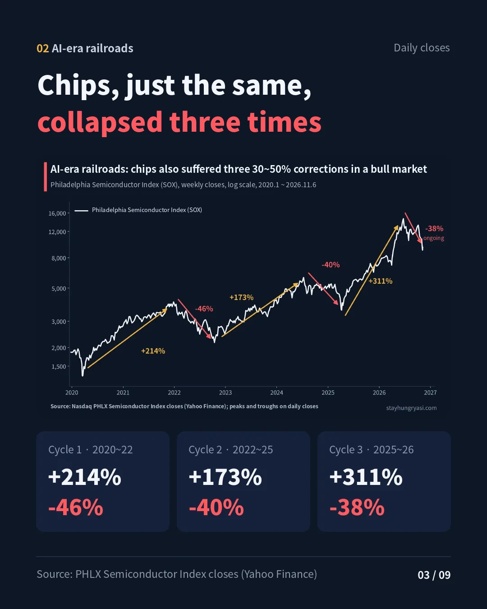
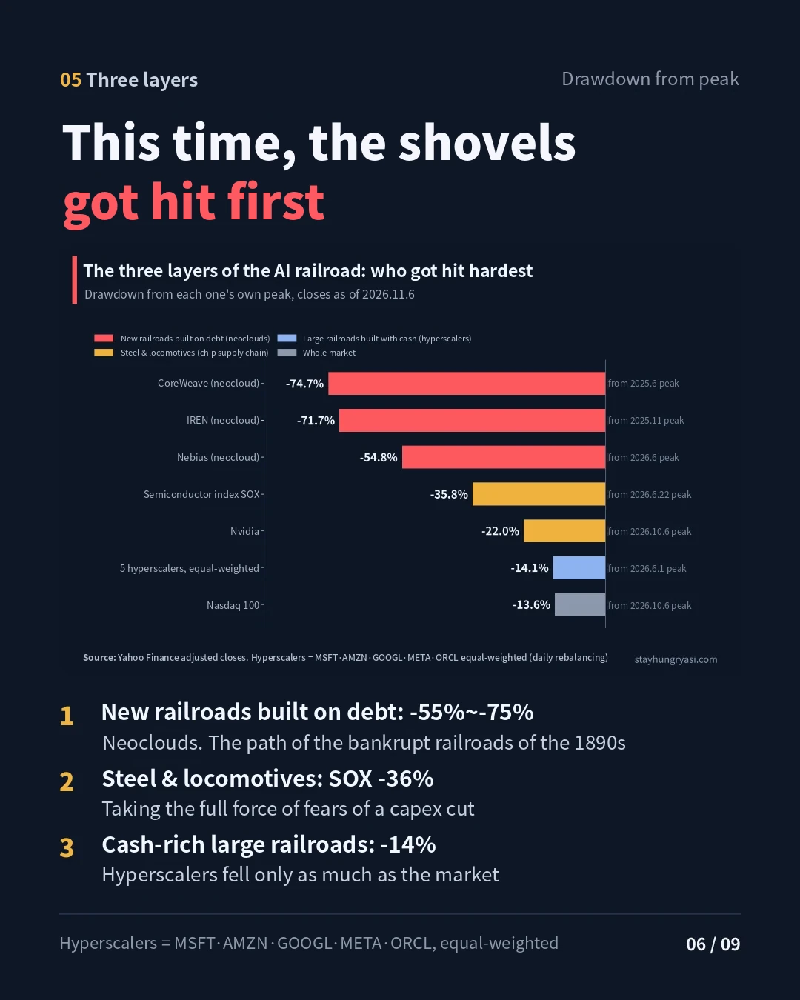
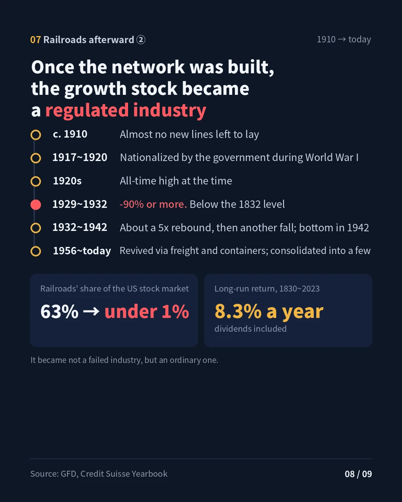
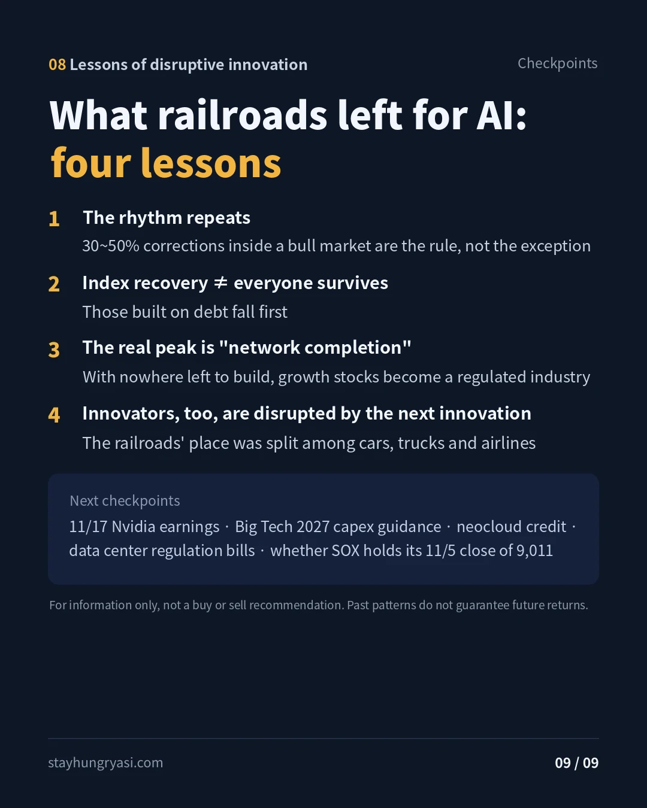

Data as of the Nov 6, 2026 US regular-session close · Written Nov 9, 2026 (Korea time) · stayhungryasi.com
Conventions: modern prices were calculated directly from Yahoo Finance daily closes (indices) and adjusted closes (individual stocks). For the 19th century, figures from the BofA·GFD original are shown alongside Shiller (Cowles) monthly data. "Interpretation" marks the author's judgment. This is not investment advice.
Railroad stocks in the late 19th century (the late 1800s) and semiconductors in the 2020s, 130 years apart, each collapsed three times by nearly the same amount inside a bull market. This report rebuilds that rhythm with actual data and then follows what happened to the railroads afterward.
The key points, summarized in 9 cards. Click an image to enlarge it.
BofA charted the S&P 500 railroad index with GFD data, showing three large corrections inside the late-19th-century bull market. We compared these figures with the Cowles long-run stock index (starting 1871) published by Professor Shiller. Before 1900, railroads made up most of the New York Stock Exchange's market value, so the Cowles index for this period is effectively a single-sector railroad index (CFA Institute).
| Phase | BofA (GFD) | Cowles-Shiller (monthly avg.) | Cowles peak and trough |
|---|---|---|---|
| Rally 1 | +200% | No data | Starts 1871 |
| Drop 1 | -50% | -47% | 1872.4 → 1877.6 |
| Rally 2 | +150% | +141% | 1877.6 → 1881.6 |
| Drop 2 | -45% | -42% | 1881.6 → 1896.8 |
| Rally 3 | +170% | +132% | 1896.8 → 1902.9 |
| Drop 3 | -30% | -29% | 1902.9 → 1903.10 |
Cowles-Shiller uses monthly averages, so its swings come out smaller than those between daily highs and lows. The gap is largest in rally 3, which is presumed to reflect the growing inclusion of industrial stocks after 1896.
To compare the rhythm by eye, the Cowles-Shiller index is drawn in the same format as the semiconductor index (SOX) chart in section 2: log scale, yellow arrows for rallies, red arrows for corrections.
BofA's original is a sector index. Plugging in a single leading stock means picking a winner that has already survived, which flatters the picture. In this correction, Nvidia was -24% from its Oct 6 peak (Nov 5 close), while SOX had already peaked on June 22 and fallen as far as -38%. As of Nov 5, 28 of the 30 SOXX stocks were in a bear market, down 20% or more from their peaks, and 15 were down more than 50% (Benzinga). The sector collapsed first, and the leader held out to the end.
There is one more clue. In early 1900, railroads accounted for 63% of US stock market value (Credit Suisse Yearbook). The railroad index of the time was both a sector index and a market index. So today, the sector (SOX) and the market (Nasdaq 100) have to be viewed together to get the same setup as the original.
| Correction (daily closes, peak → trough) | SOX | Nasdaq 100 | Nvidia |
|---|---|---|---|
| 2020 Covid | -35.0% | -28.0% | -37.5% |
| 2022 rate shock | -46.5% | -35.6% | -66.3% |
| 2024–25 yen carry unwind, DeepSeek, tariffs | -39.7% | -22.9% | -36.9% |
| 2026 current (to the 11/5 low) | -38.4% | -14.7% | -24.1% |
The peak dates of the three measures differ. Nvidia uses adjusted closes that reflect stock splits and dividends.
Set the three SOX cycles beside the railroads and the size of the corrections is strikingly similar (-50/-45/-30 vs -46/-40/-38). Two points need to be made, though. First, SOX rally 1 began at the March 2020 Covid low, before ChatGPT launched, so it was closer to a pandemic digital boom than an AI rally. Second, rally 3 was far steeper (+311%) than the railroads' (+170%). It was not a rally that faded and turned, but a sharp fall after overheating (interpretation).
In the 19th century, the railroad companies that laid the lines collapsed, while those that supplied the rails survived. The order is different in this correction. What the market fears is a cut in capital spending, and semiconductors, which book that money as revenue, are taking the hit head-on. Cash-rich hyperscalers (MSFT·AMZN·GOOGL·META·ORCL equal-weighted, the author's construction) held up at -14.1% from their June 1 peak, similar to the Nasdaq 100 (-13.6%).
What resembles the railroad era is the neoclouds that build capacity with debt. As of the Nov 6 close, CoreWeave was -74.7% from its peak, IREN -71.7% and Nebius -54.8%. Gartner projected that more than 80% of neoclouds will not survive independently through 2030 (Trending Topics). This echoes the Panic of 1893, when one quarter of US railroad mileage went into receivership (Panic of 1893).
The BofA chart ends in 1903, but the rhythm repeated once more. The Cowles index rose about 60% from its October 1903 low to September 1906, then fell about 38% through November in the Panic of 1907 (monthly averages). Just before that, the 1906 Hepburn Act allowed the government to cap railroad rates. The index regained a new high at the end of 1909. However, the share of industrial stocks in the Cowles index grew quickly after 1900, so it is hard to read as a pure railroad record.
The real turning point came next. According to GFD, by around 1910 there was almost nowhere left for railroads to expand, and during World War I the government nationalized them. Railroad stocks hit what was then an all-time high in the 1920s, but in 1929–32 they crashed more than 90% from the peak, falling below their 1832 level of 100 years earlier (GFD).
| Period | What happened to railroads |
|---|---|
| 1903~1907 | Rally 4 about +60%, 1906 Hepburn Act, 1907 panic about -38% (Cowles monthly avg.) |
| Around 1910 | Network expansion effectively ends |
| 1917~1920 | Nationalized by the government during World War I |
| 1920s | Railroad stocks at an all-time high for the time |
| 1929~1932 | -90% or more from the peak, below the 1832 level |
| 1932~1942 | About a 5x rebound through 1937, then another fall; bottom in 1942 |
| 1956~today | Revived through freight and container shipping; the industry consolidated into a few companies |
Railroads' share of the US stock market shrank from 63% in 1900 to under 1% (EconLife). Even so, the railroad index's long-run return from 1830 to 2023 was 8.3% a year, dividends included. Railroads did not become a failed industry. They became an ordinary one.
Carlota Perez holds that technological revolutions move in this order: financial frenzy → crash → institutional reset (the turning point) → real-economy deployment. At the turning point, politics steps in. For railroads, that role was played by the Granger Laws (1870s), the Interstate Commerce Act (1887) and the Hepburn Act (1906). In AI in 2026, New York State imposed a 1-year moratorium on large data centers in July (6sqft), and Texas paused grid-connection approvals in August (Jones Day). Right after the November midterm elections, amid concerns about data center regulation, SOX fell -12.25% in a single day, its second-largest drop on record (24/7 Wall St.). That said, Perez herself sees AI not as a new revolution but as a technology that completes the information and communications revolution that began in 1971. The mapping above is an interpretation that borrows her framework.
On the capital side, too, there are signals resembling the later railroad years. 2026 capital spending by Amazon, Alphabet, Meta, Microsoft and SpaceX is expected to reach $803 billion to $828 billion (Hargreaves Lansdown). Amazon's free cash flow over the last 12 months was -$42.4 billion, and Alphabet's third-quarter free cash flow was -$9.1 billion (Tech Insider). On the other hand, Microsoft lowered its 2026 capex outlook because of delays in third-party data center capacity, while other Big Tech companies said they would raise investment further in 2027, so the signals are mixed.
Railroads left four lessons (interpretation). Corrections of 30–50% inside a bull market are the rule, not the exception. Even when the index recovers, those built on debt fall first. The real peak of growth is the moment of "network completion," when there is nowhere left to build. And innovators, too, eventually give way to the next innovation. The railroads' place was split among cars, trucks and airlines.
| Item | Why it matters |
|---|---|
| 11/17 Nvidia Q3 earnings | First data on whether slowing capex is turning into actual order declines |
| Big Tech 2027 capex guidance | A leading indicator of "network completion." Whether downward revisions spread |
| Neocloud stock prices and credit | Funding conditions for debt-financed operators |
| Data center regulation bills | Whether moratoriums spread. A turning-point signal like railroad regulation |
| SOX 11/5 close of 9,011 | A close below this level could mean the correction goes deeper than the railroads' Drop 3 (-30%) |
Modern prices were calculated from Yahoo Finance daily closes (indices) and adjusted closes (individual stocks) through Nov 6, 2026. Peaks and troughs are based on daily closes; the SOX chart uses weekly closes with the peak and trough dates added. The hyperscaler basket is MSFT·AMZN·GOOGL·META·ORCL equal-weighted, rebalanced daily. For the 19th century, figures from the BofA·GFD original are shown alongside Shiller/Cowles monthly data.
stayhungryasi.com · Research for information purposes only, not investment advice. Past patterns and historical analogies do not guarantee future returns. Investment decisions and their consequences rest with the investor.